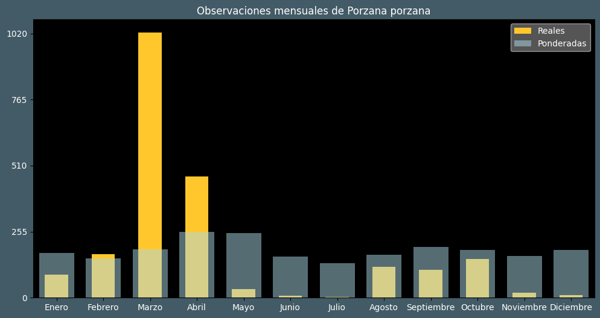

Observaciones por mes
Observations por hora

Categoría IUCN: ?
Género: Porzana
Familia: Rallidae
Orden: Gruiformes
Descubrimiento: Linnaeus (1766)
| Idioma | Nombre |
|---|---|
| Afrikaans (af) | Gevlekte riethaan |
| Arabic (ar) | مرعة رقطاء |
| Belarusian (be) | Звычайны пагоніч |
| Bulgarian (bg) | Голяма пъструшка |
| Catalan (ca) | Polla pintada europea |
| Chinese (zh) | 斑胸田鸡 |
| Chinese traditional (zh-TW) | 斑胸田雞 |
| Croatian (hr) | Riđa štijoka |
| Czech (cs) | Chřástal kropenatý |
| Danish (da) | Plettet rørvagtel |
| Dutch (nl) | Porseleinhoen |
| English (en) | Spotted crake |
| Estonian (et) | Täpikhuik |
| Finnish (fi) | Luhtahuitti |
| French (fr) | Marouette ponctuée |
| German (de) | Tüpfelsumpfhuhn |
| Greek (el) | Στικτοπουλάδα |
| Hebrew (he) | ברודית גדולה |
| Hungarian (hu) | Pettyes vízicsibe |
| Icelandic (is) | Dílarella |
| Indonesian (id) | ? |
| Italian (it) | Voltolino |
| Japanese (ja) | コモンクイナ |
| Korean (ko) | ? |
| Latvian (lv) | Ormanītis |
| Lithuanian (lt) | Paprastoji švygžda |
| Maceodnian (mk) | Дамчеста барска кокошка |
| Malayalam (ml) | പുള്ളി നെല്ലിക്കോഴി |
| North_sami (se) | Jeaggevuonccis |
| Norwegian (no) | Myrrikse |
| Persian (fa) | یلوه خالدار |
| Polish (pl) | Kropiatka |
| Portuguese (pt) | Franga-de-água-malhada |
| Russian (ru) | Погоныш |
| Serbian (sr) | Barski petlić |
| Slovak (sk) | Chriašť bodkovaný |
| Spanish (es) | Polluela pintoja |
| Swedish (sv) | Småfläckig sumphöna |
| Thai (th) | นกอัญชันเล็กลายจุด |
| Turkish (tr) | Benekli suyelvesi |
| Ukrainian (uk) | Погонич звичайний |